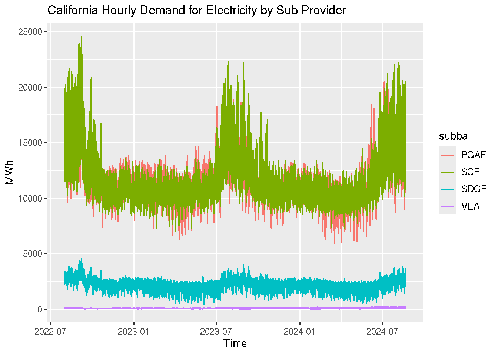
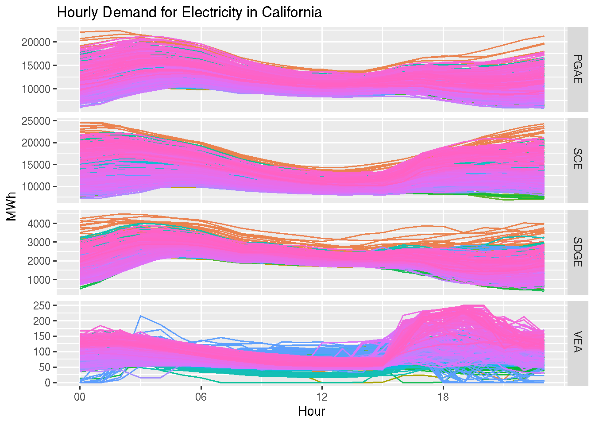
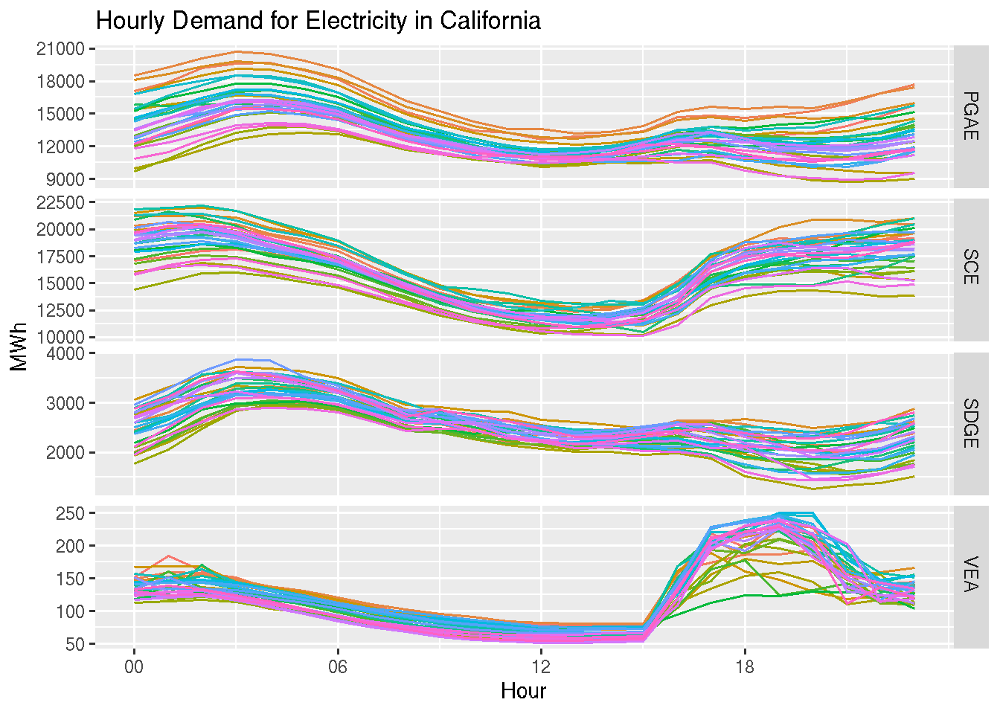
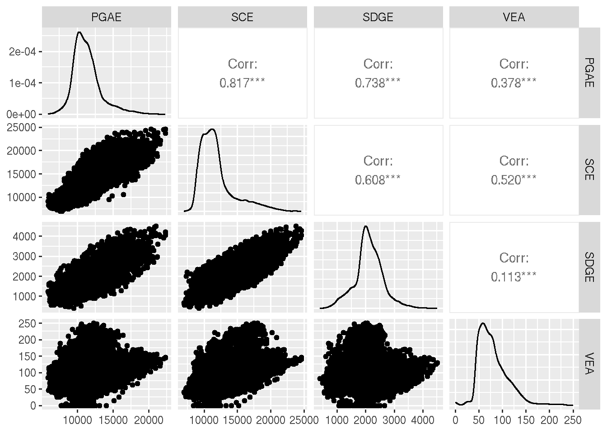

Second week of the forecasting sequence, after we reviewed last week Nixtla’s statsforecast Python library, this week we will review the fable R library.
The Fable library provides a set of univariate and multivariate time series forecasting models, such as ARIMA, ETS, and time series linear regression models. It also provides tools to train, test, and evaluate the models and functions to visualize the outputs.
The fable library goes side-by-side with the book of the week, Forecasting: Principles and Practice by Rob J. Hyndman and George Athanasopoulos. As mentioned above, the library is part of the tidy-verts ecosystem along with libraries such as tsibble, fabletools, and feasts.
Forecasting the demand for electricity in California
Here is a quick demo demonstrating how to train and forecast multiple forecasting models for multiple time series using the hourly demand for electricity in California. We will mainly focus on the core functionality of the library using some of the data visualization tools and forecasting models. I plan to create a more in-depth tutorial at some point in the future. All the code and Docker settings for VScode are available on the following repository.
We will start by loading the required libraries:
library(fable)
Loading required package: fabletools
Registered S3 method overwritten by 'tsibble':
method from
as_tibble.grouped_df dplyr
library(tsibble)
Attaching package: 'tsibble'
The following objects are masked from 'package:base':
intersect, setdiff, union
library(feasts)library(dplyr)
Attaching package: 'dplyr'
The following objects are masked from 'package:stats':
filter, lag
The following objects are masked from 'package:base':
intersect, setdiff, setequal, union
library(tidyr)library(lubridate)
Attaching package: 'lubridate'
The following object is masked from 'package:tsibble':
interval
The following objects are masked from 'package:base':
date, intersect, setdiff, union
library(ggplot2)library(GGally)
Registered S3 method overwritten by 'GGally':
method from
+.gg ggplot2
Besides the tidy-verts library, we will use the dplyr, tidyr, and lubridate to process the data and time objects, and use the ggplot2 and GGally for visulize the data.
Data
We will continue to use the hourly demand for electricity in California by providers. This includes the following four providers:
Pacific Gas and Electric
Southern California Edison
San Diego Gas and Electric
Valley Electric Association
The data source is the EIA website, and a curated dataset is available in my workshop from the useR!2024 workshop - Deploy and Monitor ML Pipelines with Open Source and Free Applications. We will use the last two years for the following demonstration:
period subba subba_name parent
1 2018-07-01 08:00:00 PGAE Pacific Gas and Electric CISO
2 2018-07-01 09:00:00 PGAE Pacific Gas and Electric CISO
3 2018-07-01 10:00:00 PGAE Pacific Gas and Electric CISO
4 2018-07-01 11:00:00 PGAE Pacific Gas and Electric CISO
5 2018-07-01 12:00:00 PGAE Pacific Gas and Electric CISO
6 2018-07-01 13:00:00 PGAE Pacific Gas and Electric CISO
parent_name value value_units type
1 California Independent System Operator 12522 megawatthours actual
2 California Independent System Operator 11745 megawatthours actual
3 California Independent System Operator 11200 megawatthours actual
4 California Independent System Operator 10822 megawatthours actual
5 California Independent System Operator 10644 megawatthours actual
6 California Independent System Operator 10559 megawatthours actual
The fable library follows the tidyvers workflow, and it uses the tsibble object as input. Let’s reformat the input object by reformating the series timestamp and dropping unused columns:
start <-as.POSIXct("2022/8/1 0:00:00")end <-as.POSIXct("2024/8/20 23:00:00")data$time_temp <-ifelse(nchar(data$period) ==10, paste(data$period, "00:00:00", sep =" "), data$period)data$time <-as.POSIXct(data$time_temp)ts <- data |> dplyr::select(time, subba, y = value) |> dplyr::filter( time >= start & time <= end ) |> dplyr::arrange(subba, time) |>as_tsibble(index = time, key = subba)
Note: We define the object key as the electricity provider and the time column as the series index. The tsibble object uses the key to set the hierarchy of the series.
We will use the autoplot function to visualize the series:
ts |>autoplot() +labs(y ="MWh", x ="Time",title ="California Hourly Demand for Electricity by Sub Provider" )
Plot variable not specified, automatically selected `.vars = y`

The fable library provides a set of visualization functions for time series analysis. This includes functions for seasonal and correlation plots, as well as decomposition methods. Let’s review a few of those functions. Starting with the gg_season function that provides a seasonal plot:
ts |>gg_season(y, period ="day") +theme(legend.position ="none") +labs(y ="MWh", x ="Hour", title ="Hourly Demand for Electricity in California")

This view provides an hourly view of the series. You can modify, when applicable, the seasonal type using the period argument. In addition, you can filter the input object and check the seasonal patterns during a specific time window. For example, the last 90 days:
ts |> dplyr::filter(time >max(ts$time) -60*60*24*30) |>gg_season(y, period ="day") +theme(legend.position ="none") +labs(y ="MWh", x ="Hour",title ="Hourly Demand for Electricity in California" )

Another nice visualization function is the ggpairs from GGally library that visualize the cross-correlation between the four series:
ts |>pivot_wider(values_from = y, names_from = subba) |>ggpairs(columns =2:5)

The last visualization function we will review is the lag function, which provides a visual representative of the relationship between the series and its lags (similar to the ACF):
We will keep it simple, leaving the last 72 hours as a testing partition and training the models with the rest of the data. The library has a cross-validation (i.e., backtesting) function, but this is outside the scope of this review.